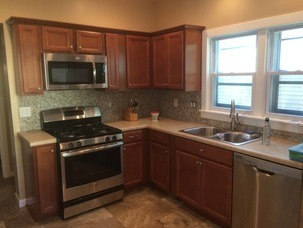

How Smart Homeowners Learn To Never Pay For Covered Home Repairs Again
Still unknown to many is a brilliant Home Warranty Program called the Choice Home Warranty that could benefit millions of households and help them never pay for covered appliance failures, furnace breakdowns, electrical issues and so much more! You likely have homeowners insurance, right? A Home Warranty Plan is similar to a homeowners insurance plan, but it actually covers many things that an insurance plan won’t like a broken refrigerator, a broken furnace or an electrical malfunction on a ceiling fan.
Often times, new homeowners are offered a 1 or 2-year home warranty plan when they purchase a home. This is generally a huge plus for the home buyer because it takes away the stress of having to pay for likely issues that might come up during the first year or two of owning the home. Issues such as a broken refrigerator or dishwasher aren’t fun to deal with. Or how about a broken furnace or air conditioner? These would likely cost $1,000s of dollars to fix!
Luckily, homeowners now have the option to get a home warranty plan anytime after they bought their home. Even if you’ve lived there for 20 years, you can still get your own home warranty plan that will cover the cost of many unforeseen home repairs!
How Do I Qualify?
Step 1: Click your state on the map to instantly check your eligibility for free.
Step 2: Get your free quote and even a special offer today! Click here to get your free quote.